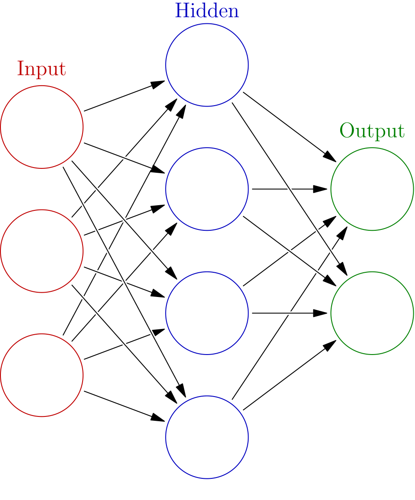

Getting Groud states enpower the Neural Networks
Citation: Hsin-Yuan Huang, et al., 2022, arXiv:2106.12627
Abstract and My Thoughts
A family of Hamiltonians \{H(x): x \in [-1,1]^m\} is defined, where the parameter x can vary continuously over real numbers within a region where the gap of H remains constant. The ground state of H(x) is denoted by \rho(x). The author proves the following two conclusions:
- If one can prepare quantum states \{\{\rho(x), x\}| x \in \mathcal{S}\} and then train a neural network using its classical shadow, it is possible to use a neural network in the Lazy zone to learn the behavior of any few-body operator’s ground state mean values at any x \in \mathcal{S}. This operation is also mentioned in the paper [1].
- If one attempts to use a classical algorithm \mathcal{A} to learn the behavior of single-operator means on the ground states of arbitrary two-dimensional H(x), it is NP-hard.
Interesting details/techniques worth learning are:
- How to rigorously prove that learning a smooth function with a neural network is feasible?
- What if this task is extended to quantum states using classical shadows and then transformed into some linear/nonlinear functions of the quantum state?
- Is it really, on average, difficult to compute single-operator means on the ground states of smoothly gapped Hamiltonians? How does the paper prove this?
ANN and the Neural Tangent Kernel

All weight matrices and bias vectors are collectively represented by a vector \theta \in \mathbb{R}^P with dimension \sum_{l} n_l(n_{l+1} + 1). The resulting function is actually a family of functions whose values are composed of n_L elements from the set \mathcal{F}:=\{f|f:\mathbb{R}^{n_0} \to \mathbb{R}\}. Taking the k-th value of the function, where k = 1,\cdots,n_L, we define \alpha_{\theta}^{(L)}(\cdot) := F_k^{(L)}(\cdot,\theta) \in \mathcal{F}, with F_k^{(L)} being a mapping from real parameters to the function space \mathbb{R}^P \to \mathcal{F}. The cost function is defined as C:\mathcal{F} \to \mathbb{R} and when composed with \mathbf{F}^{(L)}, it yields a mapping from parameters to real numbers, i.e., C \circ \mathbf{F}^{(L)}: \mathbb{R}^{P} \to \mathbb{R}.
When we say “training a neural network,” the objective function we optimize is \mathcal{L}(\theta) = C( \mathbf{F}^{(L)}(\theta) ), and its derivative with respect to \theta is given by: \left.\nabla_{\theta}\mathcal{L}\right|_{\theta_0} = \sum_{k = 1}^{n_L}\left.\frac{\delta C}{\delta f_k}\right|_{\mathbf{f}_{\theta_0}} \cdot \left.\frac{\partial F_k^{(L)}(\cdot,\theta)}{\partial \theta}\right|_{\theta_0} where \frac{\delta C}{\delta f_k} is the functional derivative induced by taking the variational derivative with respect to the k-th output, and \cdot denotes the inner product of two functions. The function C(\mathbf{f}) is generally taken as C(\mathbf{f}) = \sum_{i} \|\mathbf{f}(x_i) - \mathbf{y}_i\|^2_2, which is the squared 2-norm of the difference between an n_L-dimensional vector, and its functional derivative is calculated as follows: \begin{aligned} \sum_{i} [\mathbf f(x_i) + \varepsilon \mathbf e(x_i) - \mathbf y_i]^2 &= \sum_{i} 2[\mathbf f(x_i)- \mathbf y_i]\mathbf e(x_i) \varepsilon + O(\varepsilon^2)\\ &= \int_{x} dx \left[ \sum_{i} 2[\mathbf f(x_i)- \mathbf y_i] \delta(x, x_i)\right] \mathbf e(x), \\ \left.\frac{\delta C}{\delta \mathbf{f}}\right|_{\mathbf{f}_0}&= \sum_{i} 2[\mathbf f_0(x_i)- \mathbf y_i]\delta(x, x_i). \end{aligned} Therefore, the derivative is: \begin{aligned} \left.\nabla_{\theta}\mathcal{L}\right|_{\theta_0} &= \int dx \sum_{i} 2[\mathbf F^{(L)}(x_i,\theta)- \mathbf y_i]\delta(x, x_i) \cdot \left.\frac{\partial \mathbf F^{(L)}(x,\theta)}{\partial \theta}\right|_{\theta_0}\\ &= \sum_{i} 2[\mathbf F^{(L)}(x_i,\theta)- \mathbf y_i] \cdot \left.\frac{\partial \mathbf F^{(L)}(x_i,\theta)}{\partial \theta}\right|_{\theta_0}, \end{aligned} where the \cdot denotes the inner product of n_L-dimensional vectors. Next, we are concerned with how the function value F^{(L)}(x,\theta) changes under parameter updates \theta_t \to \theta_{t+1}= \theta_t - \eta_t \left.\nabla_{\theta}\mathcal{L}\right|_{\theta = \theta_t}. Therefore, we compute to the first order in \eta_t: \begin{aligned} &{\mathbf F^{(L)}(x,\theta_{t+1}) - \mathbf F^{(L)}(x,\theta_t) }\approx -\eta_t\left.\frac{\partial \mathbf F^{(L)}(x,\theta) }{ \partial \theta}\right|_{\theta_t} \cdot \left.\nabla_{\theta}\mathcal{L}\right|_{\theta_{t}}\\ &(k\text{-th term})= -\eta_t\left.\frac{\partial F_k^{(L)}(x,\theta) }{ \partial \theta}\right|_{\theta_t} \cdot \sum_{i,r}2[F_r^{(L)}(x_i,\theta)- y_{i,r}] \cdot \left.\frac{\partial F_r^{(L)}(x_i,\theta)}{\partial \theta}\right|_{\theta_t}\\ &= \sum_{i,r}\left. \left\langle\frac{\partial F_k^{(L)}(x,\theta) }{ \partial \theta}, \frac{\partial F_r^{(L)}(x_i,\theta)}{\partial \theta} \right\rangle \cdot 2\eta_t[y_{i,r} - F_r^{(L)}(x_i,\theta)]\right|_{\theta_t}\\ &(\text{all terms})= \eta_t\left.\sum_{i}\mathbf \Theta^{(L)}(\theta)(x, x_i) \cdot \mathbf d_i(\theta)\right|_{ \theta = \theta_t} \end{aligned} The change in the function value at point x during the update process is linked by the following Neural Tangent Kernel (NTK): \mathbf{\Theta}^{(L)}(\theta)(x, x') = \sum_{p=1}^P \partial_{\theta_p} \mathbf{F}^{(L)}(x; \theta) \left[\partial_{\theta_p} \mathbf{F}^{(L)}(x'; \theta)\right]^T If we further set the step size to be small and uniform, the entire gradient descent process is equivalent to the evolution of the following differential equation: \begin{aligned} \frac{\partial \mathbf F(x,t)}{\partial t} = \eta \sum_{i} \mathbf{\Theta}^{(L)}(t) (x,x_i) 2[ \mathbf y_i - \mathbf F(x_i,t)] \end{aligned}
The Lazy Zone (Lazy Training Region)
Consider the case where n_L = 1 (i.e., scalar output). Define the model output vector on the training set \mathbf{u}(t) \in \mathbb{R}^P, where [\mathbf u(t)]_{i} := F(x_i,t). Similarly, define the kernel vector at test point x with respect to the training data \mathbf{k}(x,t) \in \mathbb{R}^P, whose elements are given by [\mathbf{k}(x,t)]_{i} = \Theta^{(L)}(t)(x,x_i); and the kernel matrix (Gram Matrix) on the training set \mathbf{H}^{(L)}(t) \in \mathbb{R}^{P \times P}, whose elements are given by \mathbf{H}^{(L)}_{jk}(t):= \Theta^{(L)}(t)(x_j,x_k). According to the above lemma, the function evolution caused by parameter updates satisfies the following system of differential equations: \left\{\begin{aligned} \frac{d\mathbf{u}(t) }{dt} &= 2\eta \mathbf{H}^{(L)}(t)[\mathbf{y}- \mathbf{u}(t)]\\ \frac{\partial F(x,t)}{\partial t} &= 2\eta \mathbf{k}(x,t)^\top [\mathbf{y}- \mathbf{u}(t)] \end{aligned}\right.
At this point, it can be assumed that \mathbf{H}^{(L)}(t) \equiv \mathbf{H} and \mathbf{k}(x,t) \equiv \mathbf{k}(x) are constant matrices/vectors. Under the linearization assumption, the above system of differential equations degenerates into a linear ordinary differential equation. First, solve the first equation (evolution of training set error): \frac{d}{dt}(\mathbf{u}(t) - \mathbf{y}) = -2\eta \mathbf{H} (\mathbf{u}(t) - \mathbf{y}) \implies \mathbf{u}(t) - \mathbf{y} = e^{-2\eta \mathbf{H} t} (\mathbf{u}(0) - \mathbf{y}) That is, the error term decays exponentially: \mathbf{y} - \mathbf{u}(t) = e^{-2\eta \mathbf{H} t} (\mathbf{y} - \mathbf{u}(0)). Substituting this into the second equation and integrating with respect to time t, we can find the function variation at any test point x: \begin{aligned} F(x,t) - F(x,0) &= \int_0^t 2\eta \mathbf{k}(x)^\top e^{-2\eta \mathbf{H} \tau} (\mathbf{y} - \mathbf{u}(0)) d\tau \\ &= \mathbf{k}(x)^\top (2\eta \mathbf{H})^{-1} (I - e^{-2\eta \mathbf{H} t}) (2\eta \mathbf{H}) (\mathbf{H}^{-1} (\mathbf{y} - \mathbf{u}(0))) \\ &= \mathbf{k}(x)^\top \mathbf{H}^{-1} (I - e^{-2\eta \mathbf{H} t}) (\mathbf{y} - \mathbf{u}(0)) \end{aligned} Taking the limit as t \to \infty (assuming \mathbf{H} is positive definite, then e^{-2\eta \mathbf{H} t} \to 0), we obtain the final convergence solution of gradient descent: \begin{aligned} F(x,\infty) &= F(x,0) + \mathbf{k}(x)^\top \mathbf{H}^{-1}(\mathbf{y} - \mathbf{u}(0)) \\ &= \underbrace{\mathbf{k}(x)^\top \mathbf{H}^{-1} \mathbf{y}}_{\text{I. Pure kernel regression term (Signal)}} + \underbrace{\left( F(x, 0) - \mathbf{k}(x)^\top \mathbf{H}^{-1} \mathbf{u}(0) \right)}_{\text{II. Initialization residual term (Noise)}} \end{aligned} The above analytical solution reveals that the final model trained by a neural network in the Lazy zone consists of two parts. The first part (Signal) is the standard kernel ridge regression (KRR) solution (when the regularization coefficient tends to 0). This part is completely determined by the kernel function \Theta induced by the network structure and the training labels \mathbf{y}, independent of specific random initialization. The second part (Noise) is the residual from initialization. This actually reflects the impact of neural network initialization on the final result. In the infinite-width limit, if an ensemble average over all possible initializations is taken (Ensemble Average), since \mathbb{E}[F(x,0)] = 0, this term will vanish and the model will perfectly converge to a pure kernel regression solution. In the “Lazy” zone, parameters hardly move from their initial positions; the network does not learn new “feature representations,” but rather performs simple linear combinations of features formed randomly at initialization (i.e., fixed Kernel).
Although NTK theory perfectly explains the convergence and generalization properties of over-parameterized networks (without overfitting with time), it cannot explain the tremendous success of modern deep learning on complex tasks such as ImageNet, NLP.
- In the NTK region: The kernel is static; the model acts like a pre-set dictionary that does not even need to see data and makes predictions by looking up entries (calculating similarity). This is very effective and stable for low-dimensional, smooth functions (such as certain quantum physical quantities).
- In the feature learning region: Kernel \Theta(t) evolves dramatically over time. This allows the model to adaptively learn new kernel functions based on data. Modern neural networks deliberately break out of the Lazy zone by adjusting initialization variance and increasing the learning rate, causing parameters to undergo significant migration.
Further requirements for nonlinear function \sigma include: (i) Lipschitz continuity condition |\sigma(u) - \sigma(v)| \le K |u - v|, (ii) twice differentiability: both first derivative \sigma' and second derivative \sigma'' of \sigma exist everywhere in the domain \mathbb{R}, (iii) bounded second derivative: |\sigma''(x)| \le C.